TrStudio — Developer Guide
TrStudio-DevGuide.md- Architecture cheat-sheet
- Roles and menu map
- Screen-by-screen code map
- Sign in (/login)
- Create account (/register)
- Reset password (/forgot-password)
- Setup required (/setup-required)
- Account & spend (/account)
- Avatar studio (/avatar)
- Character library (/avatar/characters)
- Image studio (/image)
- Voice studio (/voice)
- Video studio (/video)
- Prompt studio (/prompt-studio)
- Gallery (/gallery)
- Projects (/projects)
- Comparison (/compare)
- Library (/library)
- Hardware & setup (/admin/setup/hardware)
- Model sources (/admin/sources)
- Model library (/admin/models)
- Registry & providers (/admin/registry)
- RunPod & ops (/admin/ops)
- ComfyUI import & debug (/admin/comfy/import)
- Content policy (/admin/policy)
- Cross-cutting flows
- Sign-in
- Configuration, logging, errors
- How to fix a bug with this guide
- Known issues
| App | TrStudio |
| Kind | app |
| Size | Small |
| Verified on | 2026-11-15 |
| Date | 2026-11-15 |
✅ Refreshed 2026-11-15 (
--update). The 22 studio, workspace, admin and auth screens whose code changed on 15 Nov 2026 (controls now carry their mockups'data-testidnames; pages reshaped; newest run reopened on load; test-only seed endpointsPOST /test/seed/<mockup>intests/TrStudio.TestHost/Program.cs) were re-read at file and line. Each entry below carries its current Call chain: line and where-to-break table. All 22 screens rendered OK at 1280 and 390 in light and dark on the test host (tests/TrStudio.TestHost, http://localhost:5099) on 15 Nov 2026 (evidencetests/.artifacts/verify/screens.json); the screenshots indocs/screenshots/TrStudio/were replaced with that run's 1280 light shots. The full per-control data-lineage tables stay in the role files (Creator, Operator); where their line numbers differ from the tables here, the tables here are current.✅ Runtime-verified 2026-07-05 (unified role-based app) — after the 2026-07-05 consolidation (BRD-86 / ADR-012: the two apps became ONE role-gated
TrStudioapp;TrStudioAdminretired), the app was re-exercised as Creator, Operator, and Owner via the/dev/sessionseam on the single app (:5099) and, for the new MAUI desktop head (TrStudio.Desktop, nowsrc/TrStudio), via a FlaUI native-window smoke on Windows (Mac Catalyst builds but is unverified — no Mac in this env). Live evidence: Creator → studios only +/admin/*→ in-app AccessDenied + admin API 403; Operator → 7 management screens render, API 200; Owner → both surfaces + in-app switch. Screenshots indocs/screenshots/TrStudio/. The 9 FE↔API route/visual defects noted below were caught + fixed on 2026-07-04 and remain fixed through the consolidation.ℹ️ This is an
--updaterealignment: the per-screen control/data-lineage bodies are unchanged by the consolidation (same endpoints/services/repos); what changed is the hosting (management screens movedTrStudioAdmin/Components/Pages/→src/TrStudioUI/Pages/Admin/), the role-gated shell, and landing.✅
*verify all(2026-07-06) +*fix-issues(2026-07-07) — RESOLVED. The verify pass found 4 screens that didn't reflow at 390px (clipped controls, dead space): Character library, Prompt/script library, Account & spend, Model sources.*fix-issuesfixed all 4 with page-scoped@media(≤430px)single-column collapse + header wrapping + a systemic shell fix (the SidebarInset content column +.table-scrollnow carrymin-width:0, so wide content scrolls internally instead of inflating the layout). Re-smoked @390px: Character/LibrarydocumentElement.scrollWidth==body==390; Account/Sources controls all render & fit (documentElement.scrollWidth==390, no page scrollbar) with their wide DataTable scrolling internally (a minor DataTable inner-width trait logged as TrBlazeUI TR-010). All 4 back toVerified. Screenshotstest-results/verify-ui/refix-*.png.
Purpose — the document a HUMAN developer uses to trace any screen, control, or number on the page down to the database, to find/fix a bug or verify AI-generated code. The BRD says what the app does, the Architecture how the system is shaped; this guide says exactly which files produce each screen — Razor page → control → client service → API endpoint → engine service → repository → SQL/table — per user role. It documents the as-built code; regenerate with
*devguide TrStudioafter code changes.
This is a split guide (2 roles, 23 distinct screens → split per the devguide §3 threshold). The call chains and where-to-break tables are below; the per-control lineage is in the role files.
Architecture cheat-sheet#
flowchart LR
UI["src/TrStudioUI/Pages"] --> H["HttpClient TrStudioApi + InProcessEngineHandler"] --> R["src/TrStudio.InProcess/Routes"] --> Svc["src/TrStudio.Engine/Domain"] --> Data["Dapper repositories"] --> DB[("SQLite / Postgres tables")]
| Layer | Project / folder | What lives here |
|---|---|---|
| UI (Blazor) — shared RCL (ALL screens) | src/TrStudioUI/ (RCL) | Pages/ (creator screens) + Pages/Admin/ (the 7 management screens), Navigation/AppShellNavigation.cs, Layout/AppSidebar.razor, MainLayout.razor, Layout/AccessDenied.razor, Auth/ contracts — hosted by the desktop app src/TrStudio (and, for headless checks, tests/TrStudio.TestHost) |
| Hosts | src/TrStudio (desktop, MAUI, Mac first) · tests/TrStudio.TestHost (headless checks only) | Named HttpClient TrStudioApi with InProcessEngineHandler (src/TrStudio/MauiProgram.cs:67, tests/TrStudio.TestHost/Program.cs:69-70) |
| In-process routes | src/TrStudio.InProcess/Routes/ | /api/v1/* handlers dispatched by InProcessEngineHandler.SendAsync (InProcessEngineHandler.cs:33), mapped by RouteMap.MapAll (RouteMap.cs:13, called at EngineHost.cs:159); src/TrStudioApi/Endpoints/ keeps the API-era copies |
| App / domain services | src/TrStudio.Engine/Domain/<Area>/ | Business logic per area |
| Data access | src/TrStudio.Engine/Infrastructure/Data/ (+ per-area) | Dapper repositories, parameterized SQL. No EF Core, no stored procs. |
| Database | src/TrStudioDb/Scripts/*.sql | DbUp migrations (e.g. 0621_PromptChatTokens.sql) |
Running the solution (start here)#
TrStudio.slnx is a 7-project solution in which TrStudioAdmin is RETIRED (merged into the unified TrStudio app on 2026-07-05, ADR-012; removed from the solution) and TrStudio.Desktop (a MAUI Blazor Hybrid desktop head, renamed src/TrStudio on 2026-11-14) is NEW. Running the web app means starting TrStudioApi + TrStudio together (API first), with the two Docker dependency containers already up; for the desktop app, start TrStudioApi + TrStudio.Desktop instead. The remaining projects are libraries — do not set them to start. Full step-by-step (Visual Studio multiple-startup config + CLI) is in docs/TrStudio-UsageGuide.md → "Which projects to run" / "How to run". Quick reference:
| Project | Start? | URL / role |
|---|---|---|
src/TrStudioApi | ✅ Startup (first) | http://localhost:5102 — Web API, DbUp migrations, Hangfire |
src/TrStudio | ✅ Startup | http://localhost:5099 — the ONE unified role-based Blazor Web app (creator studios + role-gated management surface) |
src/TrStudio | ✅ Startup — the desktop app (called src/TrStudio.Desktop until 2026-11-14) | MAUI Blazor Hybrid desktop app, Mac first (Windows later), with the engine inside from phase 3 |
src/TrStudioAdmin | ❌ RETIRED | merged into TrStudio 2026-07-05 (ADR-012); removed from the solution, not a startup project (old :5098 host gone) |
src/TrStudio.Engine, src/TrStudio.Models, src/TrStudioUI, src/TrStudioDb | ❌ libraries | — (TrStudioUI RCL now hosts all screens, incl. management under Pages/Admin/) |
- Dependencies (Docker):
docker start WinPgVectorDb appmanager-api→docker ps(both Up) before launching. Postgres (:5432) and AppManager (:5101) both run as containers; a down container is the usual cause of "can't connect"/"Docker" errors at startup. - Visual Studio: right-click solution → Configure Startup Projects… → Multiple → Start =
TrStudioApi+TrStudio(API at the top), everything else = None → F5. Wait for the API consoleNow listening on: http://localhost:5102. (Phase 3, 2026-11-14: the desktop appsrc/TrStudioruns alone with the engine inside; see phase 3 developer guide.) - Phase 3 (2026-11-14): the old web head was deleted and the desktop project took its name,
src/TrStudio(MAUI Blazor Hybrid, Mac first). The headless checks usetests/TrStudio.TestHoston http://localhost:5099. The July paragraphs above describe the API-era shape. - Test-only seed data (2026-11-15):
POST /test/seed/<mockup>endpoints intests/TrStudio.TestHost/Program.cs(from line 120), driven bytests/verify/seed/<mockup>.sh. Test host only; never in the desktop app.
Roles and menu map#
| Role | Test user (see UsageGuide) | Authorization (as-built) | App / surface | Detail file |
|---|---|---|---|---|
| Creator (standard + Premium) | user 2 creator@trstudio.test / user 4 premium@… | AppManager JWT + per-handler ResolveUserId owner filter; endpoints use the app fallback auth policy (few declarative .RequireAuthorization()); client shell shows the Creator surface only (/admin/* → AccessDenied) | The ONE TrStudio app (:5099) — Creator surface; screens in the shared RCL src/TrStudioUI/Pages/ | TrStudio-DevGuide-Creator.md |
| Operator / Admin | user 3 admin@trstudio.test | client gate: AppShellNavigation.IsRouteAllowed → AccessDenied for non-management roles; server gate: SpineModule.AdminOnlyPolicy = role Owner/Operator (SpineModule.cs:67-70), enforced in-handler | The ONE TrStudio app (:5099) — Management surface (role-gated); screens now in the shared RCL src/TrStudioUI/Pages/Admin/ | TrStudio-DevGuide-Operator.md |
| Owner / Superadmin | user 1 admin@appmanager.local | union of both (Creator + Operator) | The ONE TrStudio app — lands on the Creator surface, switches to the Management surface via the in-app sidebar-footer control | Creator + Operator files above |
Landing-truth (read from code, not inferred — re-read 2026-07-05 after the consolidation):
- Creator lands on
/avatarafter login (Login.razor:153-166→ResolveLanding, + setup-gateIdentityEndpoints.cs:313-322). - Operator lands on
/admin/ops— now code-backed in the unified app (the old two-app "not code-backed" note is superseded):AppShellNavigation.ResolveDefaultSurfaceselects the Management surface for an Operator (AppShellNavigation.cs:98-106),TrStudioNavSets.ManagementLandingPath = "/admin/ops"(TrStudioNavSets.cs:14), and the post-login redirect routes Operator→/admin/opselse/avatar(Login.razor:165; dev seam identicalDevSession.razor:117-118). Confirmed live (.smoke/results.jsonOperatorlandUrl …/admin/ops). - Owner lands on
/avatar(Creator surface) and switches to Management in-app via the sidebar footer (AppSidebar.razor:85-89→AppShellNavigation.cs:63-66, target/admin/ops). The dev-session seam resolves the authoritative role viaGET /api/v1/auth/me(DevSession.razor).
(The landing-truth line numbers above date from 2026-07-05; the Sign in entry below carries the current Login.razor lines.)
Screen-by-screen code map#
- Creator (16 screens): Login, Register, Forgot-password, Setup-required, Home, Avatar studio (flagship), Character library, Image studio, Voice studio, Video studio, Prompt studio (
/prompt-studio), Gallery, Projects, Comparison, Library, Account — full lineage in the Creator file. Home was not changed on 15 Nov 2026 and keeps its Creator-file entry. - Operator / Management surface (7 screens, role-gated within the one app): Hardware & Guided setup (dual route), Model sources, Model library, Registry & providers, RunPod & Ops, ComfyUI import & debug (dual route), Content policy / NSFW — full lineage in the Operator file.
Sign in (/login)#
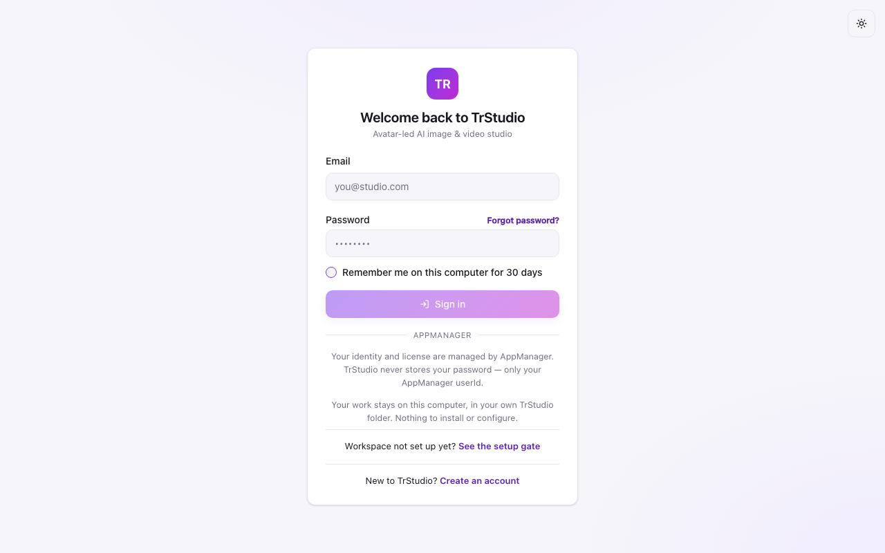
Runtime: renders — 1280 and 390, light and dark, test host, 2026-11-15 (tests/.artifacts/verify/screens.json).
Call chain: Login.razor:HandleSignInAsync → IdentityEndpoints.LoginAsync (POST /api/v1/auth/login) → AppManagerClient.LoginAsync (external AppManager AuthSvc/login) → SetupGateService.EvaluateAsync → ModelSourceRepository.ListAsync / RegistryRepository.ListAsync → "ModelSource", "RegistryModel"
| File and line | Function | Watch | Expected value |
|---|---|---|---|
src/TrStudioUI/Pages/Auth/Login.razor:254 | HandleSignInAsync | vRequest | Email/Password typed in field-email/field-pwd, RememberMe from remember-me |
src/TrStudio.InProcess/Routes/IdentityEndpoints.cs:74 | LoginAsync | vSession | AppManager session with Token, UserId, Role (401 INVALID_CREDENTIALS on bad password) |
src/TrStudio.Engine/Infrastructure/Identity/AppManagerClient.cs:59 | LoginAsync | vEnvelope | AppManager auth envelope; password sent RSA-encrypted (line 55) |
src/TrStudio.InProcess/Routes/IdentityEndpoints.cs:428 | ApplySetupGateAsync | vGate | SetupComplete and RedirectPath (role landing) |
src/TrStudio.Engine/Domain/SetupGate/SetupGateService.cs:42 | EvaluateAsync | vIsComplete | true only with an enabled source AND a ready registry model |
src/TrStudio.Engine/Infrastructure/ModelSources/ModelSourceRepository.cs:52 | ListAsync | vRows | rows from "ModelSource" |
Controls (data-testid): card-1, sign-in, field-email, field-pwd, remember-me-row, remember-me, link-forgot-password, signin-btn, login-error, alert-missing-sign-in-settings, alert-sign-in-unreachable, alert-kept-sign-in-ended, setup-required-link, link-create-an-account, note-local-data
Calculations on this screen: IsEmailValid (has @ with a . after it), IsFormValid (email valid and password not blank), ResolveLanding (picks the gate's DefaultLandingPath, else /admin/ops for Operator or /avatar). On first render, OnAfterRenderAsync posts /api/v1/auth/resume (IdentityEndpoints.ResumeAsync, line 181) to reopen a remembered sign-in.
Create account (/register)#
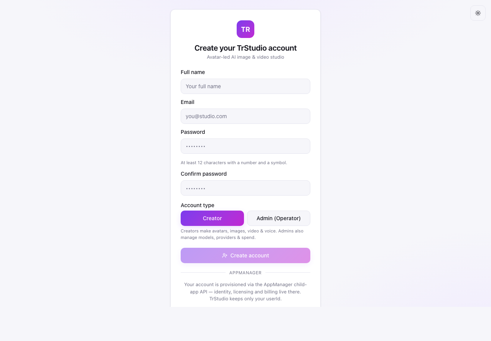
Runtime: renders — 1280 and 390, light and dark, test host, 2026-11-15 (tests/.artifacts/verify/screens.json).
Call chain: Register.razor:HandleCreateAsync → IdentityEndpoints.RegisterAsync (POST /api/v1/auth/register) → AppManagerClient.RegisterAsync (external AppManager AuthSvc/register) → SetupGateService.EvaluateAsync → RegistryRepository.ListAsync → "RegistryModel" (and "ModelSource")
| File and line | Function | Watch | Expected value |
|---|---|---|---|
src/TrStudioUI/Pages/Auth/Register.razor:179 | HandleCreateAsync | vRequest | Name, Email, Password from the fields; AccountType "AdminOperator" or "Creator" |
src/TrStudio.InProcess/Routes/IdentityEndpoints.cs:129 | RegisterAsync | vSession | new AppManager session (Problem EMAIL_EXISTS for a duplicate email) |
src/TrStudio.Engine/Infrastructure/Identity/AppManagerClient.cs:84 | RegisterAsync | vEnvelope | AppManager auth envelope for the new user |
src/TrStudio.Engine/Domain/SetupGate/SetupGateService.cs:42 | EvaluateAsync | vIsComplete | false on a fresh install, so admins land on setup |
src/TrStudio.Engine/Infrastructure/Data/RegistryRepository.cs:88 | ListAsync | vRows | rows from "RegistryModel" |
Controls (data-testid): card-1, field-name, field-email, field-pwd, field-pwd2, account-type, btn-creator, type-creator, btn-admin-operator, type-admin, btn-create-account, create-btn, register-error, link-sign-in
Calculations on this screen: IsPasswordValid (12 or more characters, at least one digit and one symbol), IsConfirmValid (the two passwords match), IsEmailValid, ResolveLanding (the gate's path, else /admin/setup/hardware for admin or /avatar).
Reset password (/forgot-password)#
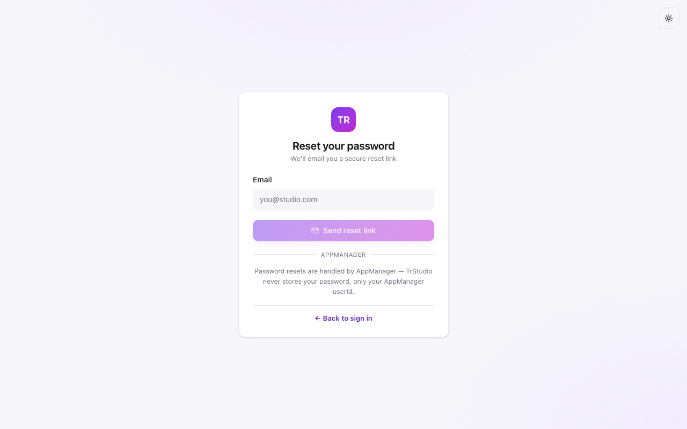
Runtime: renders — 1280 and 390, light and dark, test host, 2026-11-15 (tests/.artifacts/verify/screens.json).
Call chain: ForgotPassword.razor:HandleSendAsync → IdentityEndpoints.ForgotPasswordAsync (POST /api/v1/auth/forgot-password) → AppManagerClient.RequestPasswordResetAsync → external AppManager AuthSvc/forgot-password (no local table)
| File and line | Function | Watch | Expected value |
|---|---|---|---|
src/TrStudioUI/Pages/Auth/ForgotPassword.razor:98 | HandleSendAsync | vRequest | Email typed in field-email |
src/TrStudio.InProcess/Routes/IdentityEndpoints.cs:256 | ForgotPasswordAsync | aRequest.Email | the same email; reply is the generic "If the account exists..." message |
src/TrStudio.Engine/Infrastructure/Identity/AppManagerClient.cs:92 | RequestPasswordResetAsync | vBody | { email } posted to AppManager |
src/TrStudioUI/Pages/Auth/ForgotPassword.razor:107 | HandleSendAsync (finally) | objSent | true whatever the outcome (does not reveal whether the account exists) |
Controls (data-testid): card-1, field-email, btn-send-reset-link, alert-ok, link-back-to-sign-in
Calculations on this screen: IsEmailValid (has @ with a . after it); otherwise none.
Setup required (/setup-required)#
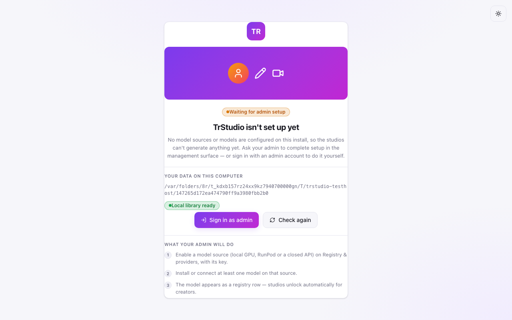
Runtime: renders — 1280 and 390, light and dark, test host, 2026-11-15 (tests/.artifacts/verify/screens.json).
Call chain: SetupRequired.razor:CheckAgainAsync → IdentityEndpoints.GetSetupGateAsync (GET /api/v1/setup-gate) → SetupGateService.EvaluateAsync → ModelSourceRepository.ListAsync / RegistryRepository.ListAsync → "ModelSource", "RegistryModel"
| File and line | Function | Watch | Expected value |
|---|---|---|---|
src/TrStudioUI/Pages/Auth/SetupRequired.razor:109 | OnInitializedAsync | objDataFolder / objStoreProblem | data folder from GET /api/v1/local-store (DesktopSessionEndpoints.cs:63), or the 503 LOCAL_STORE_UNAVAILABLE detail (InProcessEngineHandler.cs:47) |
src/TrStudioUI/Pages/Auth/SetupRequired.razor:144 | CheckAgainAsync | vGate | SetupComplete, RedirectPath |
src/TrStudio.InProcess/Routes/IdentityEndpoints.cs:313 | GetSetupGateAsync | vGate | the gate for the caller's user id and role |
src/TrStudio.Engine/Domain/SetupGate/SetupGateService.cs:42 | EvaluateAsync | vIsComplete | vHasEnabledSource && vHasReadyModel |
src/TrStudio.Engine/Infrastructure/Data/RegistryRepository.cs:88 | ListAsync | vRows | rows from "RegistryModel"; any with IsReady |
Controls (data-testid): gate-card, card-trstudio-isn-t-set-up-yet, badge-status, btn-check-again, check-again, link-sign-in-as-admin, signin-admin, card-local-data, data-store-status, badge-store-ready, data-folder, data-store-problem
Calculations on this screen: SetupGateService.EvaluateAsync (setup is complete only with at least one enabled model source AND at least one ready registry model; RoleLandingMap.GetLandingPath picks the redirect).
Account & spend (/account)#
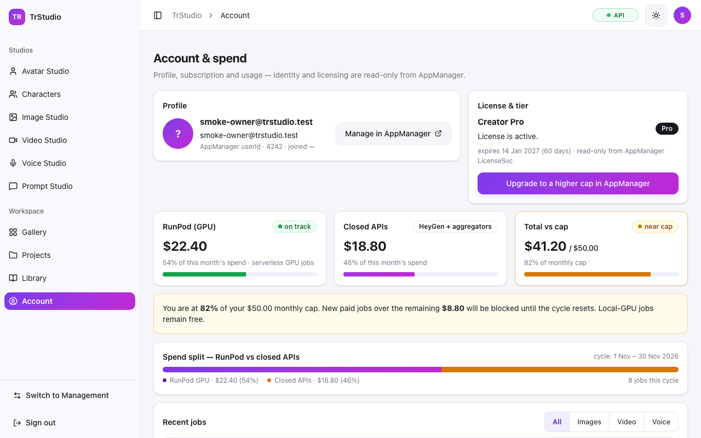
Runtime: renders — 1280 and 390, light and dark, test host, 2026-11-15 (tests/.artifacts/verify/screens.json).
Call chain: Account.razor:TryLoadAccountAsync → Phase9Endpoints.GetAccountAsync (GET /api/v1/account) → AccountService.GetSummaryAsync → SpendRepository.GetTotalsByChannelForUserSinceAsync → "SpendRecord" (license from external AppManager LicenseSvc/validate)
| File and line | Function | Watch | Expected value |
|---|---|---|---|
src/TrStudioUI/Pages/Account/Account.razor:336 | TryLoadAccountAsync | vSummary | the caller's month-to-date spend by channel plus license |
src/TrStudio.InProcess/Routes/Phase9Endpoints.cs:322 | GetAccountAsync | vSummary | summary for the signed-in user id |
src/TrStudio.Engine/Domain/Account/AccountService.cs:52 | GetSummaryAsync | vSpend.MonthToDateUsd | sum of all channel totals since the 1st of the month (UTC) |
src/TrStudio.Engine/Domain/Account/AccountService.cs:79 | ReadLicenseAsync | vStatus | AppManager license status (shows license-unavailable if unreachable) |
src/TrStudio.Engine/Infrastructure/Data/SpendRepository.cs:99 | GetTotalsByChannelForUserSinceAsync | vRows | SUM("AmountUsd") from "SpendRecord" grouped by "Channel" for this user |
Controls (data-testid): card-profile, btn-manage-in-appmanager, card-license-tier, badge-pro, license-unavailable, btn-upgrade-to-studio-higher-cap, alert-warn, api-down-alert, card-total-vs-cap, progress, card-spend-split-runpod-vs-closed-api, card-runpod-gpu, progress-2, badge-status-2, card-closed-apis, progress-3, badge-status-3, badge-heygen-aggregators, card-recent-jobs, table-1 (plus one dynamic data-testid="@($...)" built in markup)
Calculations on this screen: SpendView.FromResponse (RunPod and ClosedApi totals, near-cap at 80% and over-cap), cap merge in TryLoadAccountAsync (lines 350-359: RemainingUsd = cap - spent), Pct/PctValue (whole-number % against the cap, clamped to 0-100), SplitPct (each channel's share of RunPod + ClosedApi), CycleLabel (the current calendar month), UsageRow.FromLog (job kind, duration and cost, ActualCost else CostEstimate).
Avatar studio (/avatar)#
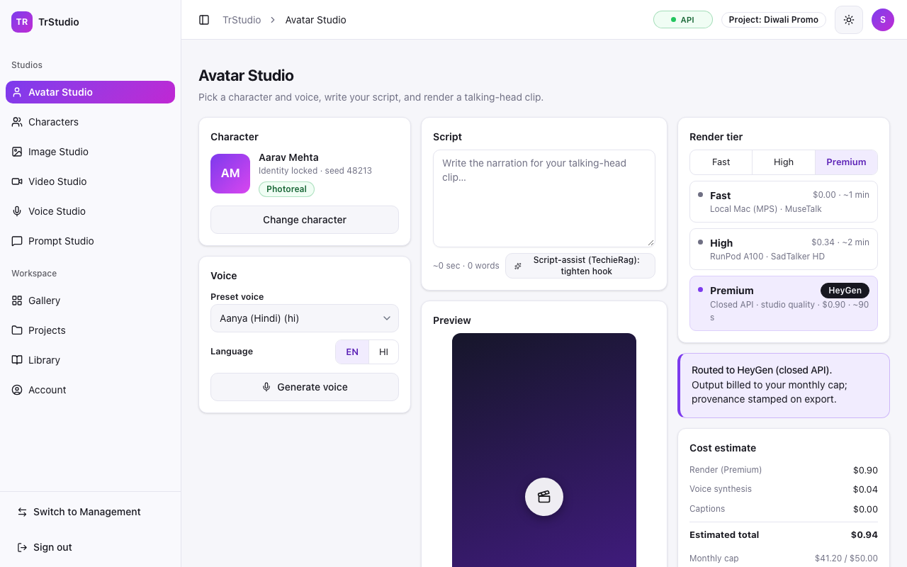
Runtime: renders — 1280 and 390, light and dark, test host, 2026-11-15 (tests/.artifacts/verify/screens.json).
Call chain: AvatarStudio.razor:TrySubmitRenderAsync → SpineEndpoints.SubmitJobAsync (POST /api/v1/jobs) → JobOrchestrator.SubmitAsync → JobRepository.InsertAsync → "GenerationJob"
| File and line | Function | Watch | Expected value |
|---|---|---|---|
src/TrStudioUI/Pages/Avatar/AvatarStudio.razor:676 | TrySubmitRenderAsync | vRequest | ModelId heygen-avatar or musetalk-local, Task LipSync, ParamsJson with characterId, voiceId, language, script |
src/TrStudio.InProcess/Routes/SpineEndpoints.cs:67 | SubmitJobAsync | vUserId | the signed-in creator's id (null gives 401) |
src/TrStudio.Engine/Domain/Jobs/JobOrchestrator.cs:182 | SubmitAsync | vJob.CostEstimate | the estimate checked against the spend cap before the insert |
src/TrStudio.Engine/Infrastructure/Data/JobRepository.cs:36 | InsertAsync | vSql | one "GenerationJob" row, then Queued at JobOrchestrator.cs:184 |
src/TrStudioUI/Pages/Avatar/AvatarStudio.razor:428 | OnAfterRenderAsync | vHasSession | loads characters, voices, projects and spend; {unresolved — this page does not reopen the newest run on load} |
Controls (data-testid): btn-render, field-preset-voice, field-aspect-ratio, field-2, switch, script-assist, link-generate-voice, link-change-character, link-create-a-character, new-character-cta, btn-export-mp4, btn-en/btn-hi (language), btn-<tier key> (render tier), card-character, card-script, card-voice, card-render-tier, card-cost-estimate, card-preview, card-captions-export, progress, safety-alert, api-down-alert
Calculations on this screen: WordCount (line 383, words in the script); EstimatedSeconds (line 387, words ÷ 2.7, rounded up); EstimatedTotal (line 390, tier cost + $0.04 voice); Headroom (line 393, cap limit − used); OverCap/NearCap (lines 396/399, total over headroom, or less than $10 left).
Character library (/avatar/characters)#
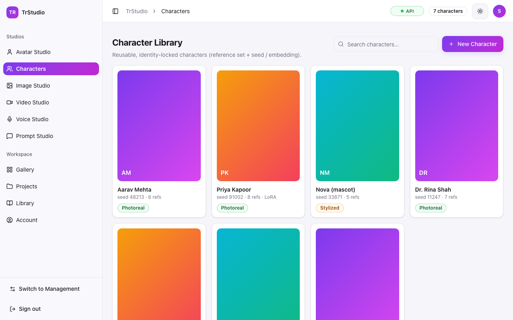
Runtime: renders — 1280 and 390, light and dark, test host, 2026-11-15 (tests/.artifacts/verify/screens.json).
Call chain: CharacterLibrary.razor:SaveCharacterAsync → CharacterEndpoints.CreateCharacterAsync (POST /api/v1/characters) → CharacterService.CreateAsync → CharacterRepository.InsertAsync → "Character"
| File and line | Function | Watch | Expected value |
|---|---|---|---|
src/TrStudioUI/Pages/Avatar/CharacterLibrary.razor:437 | SaveCharacterAsync | vSeed | the seed typed in field-seed-lock, else a random 10000–99999 |
src/TrStudio.InProcess/Routes/CharacterEndpoints.cs:56 | CreateCharacterAsync | vResponse | the new character; 201 Created, 400 on a bad request |
src/TrStudio.Engine/Domain/Characters/CharacterService.cs:64 | CreateAsync | vCharacter | name, description, realism (0 photoreal / 1 stylized), seed, loraRef |
src/TrStudio.Engine/Infrastructure/Data/CharacterRepository.cs:62 | InsertAsync | InsertSql (line 32) | one "Character" row (src/TrStudioDb/Scripts/1100_Characters.sql) |
src/TrStudioUI/Pages/Avatar/CharacterLibrary.razor:328 | TryLoadCharactersAsync | vCharacters | the creator's characters (GET /api/v1/characters); no run to reopen here |
Controls (data-testid): btn-new-character, btn-create-a-character, btn-create-character, btn-cancel, field-image-gen-prompt, field-seed-lock, field-lora, field-search-characters, btn-action, btn-action-2, card-new-character, card-reference-embeddings, card-<n> (character cards), badge-<n>-characters, api-down-alert
Calculations on this screen: FilteredCharacters (line 290, name contains the search text); CountLabel (line 477, "N characters"); DeriveName (from the opening words of the prompt).
Image studio (/image)#
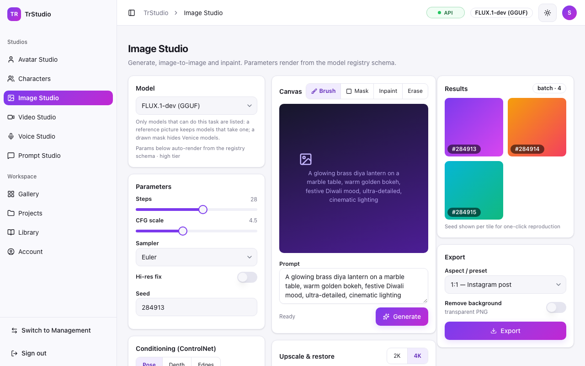
Runtime: renders — 1280 and 390, light and dark, test host, 2026-11-15 (tests/.artifacts/verify/screens.json).
Call chain: ImageStudio.razor:TrySubmitJobAsync → SpineEndpoints.SubmitJobAsync (POST /api/v1/jobs) → JobOrchestrator.SubmitAsync → JobRepository.InsertAsync → "GenerationJob"; results via SpineEndpoints.GetJobResultAsync → AssetRepository.ListByJobAsync → "GeneratedAsset"
| File and line | Function | Watch | Expected value |
|---|---|---|---|
src/TrStudioUI/Pages/Image/ImageStudio.razor:702 | TrySubmitJobAsync | vRequest | selected model, ParamsJson from BuildParamsJson (prompt from field-prompt), seed from field-seed |
src/TrStudio.InProcess/Routes/SpineEndpoints.cs:67 | SubmitJobAsync | vResponse | JobSubmitResponse with the new JobId |
src/TrStudio.Engine/Domain/Jobs/JobOrchestrator.cs:182 | SubmitAsync | vJob | one queued job after the safety and spend-cap checks |
src/TrStudio.Engine/Infrastructure/Data/JobRepository.cs:36 | InsertAsync | vSql | one "GenerationJob" row |
src/TrStudio.InProcess/Routes/SpineEndpoints.cs:175 | GetJobResultAsync | vResponses | assets with run details (ProviderKind, ActualCost) from WorkspaceEndpoints.WithRunInfoAsync |
src/TrStudioUI/Pages/Image/ImageStudio.razor:459 | TryReopenLastRunAsync | vNewest | newest image asset; its model, ParamsJson (line 468) and the job's tiles come back |
Controls (data-testid): field-prompt, field-seed, btn-generate, btn-upscaling-face-restore, btn-export, field-aspect-preset, field-upscale-model, controlnet-upload, btn-pose/btn-depth/btn-edges, btn-brush/btn-mask/btn-inpaint/btn-erase, btn-2k/btn-4k, canvas, results-strip, result-tile, result-picture, progress, alert-over-cap, alert-sent-to-venice, alert-venice-failed, badge-cloud-venice, model-filter-note, field-<param>/switch-<n> (from the model's params schema)
Calculations on this screen: BuildParamsJson (line 764, the job's parameters); ImageModelFilter.Filter (ImageModelFilter.cs:46, which models the picker shows); ImageModelFilter.ScaleOf (line 77, 2K→2, 4K→4); FormatNumber (line 877).
Voice studio (/voice)#
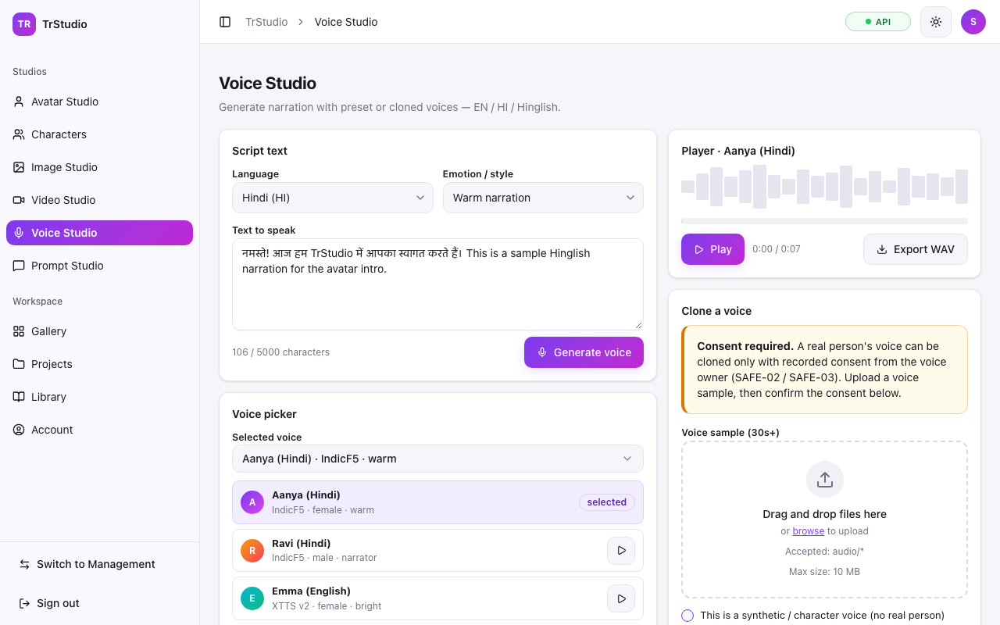
Runtime: renders — 1280 and 390, light and dark, test host, 2026-11-15 (tests/.artifacts/verify/screens.json).
Call chain: VoiceStudio.razor:TrySynthesizeAsync → VoiceEndpoints.SynthesizeAsync (POST /api/v1/voice/synthesize) → VoiceSynthesizer.SynthesizeAsync → AssetRepository.InsertAsync → "GeneratedAsset"
| File and line | Function | Watch | Expected value |
|---|---|---|---|
src/TrStudioUI/Pages/Voice/VoiceStudio.razor:695 | TrySynthesizeAsync | vRequest | Text from the script box, VoiceId of the picked voice, language, emotion, speed |
src/TrStudio.InProcess/Routes/VoiceEndpoints.cs:97 | SynthesizeAsync | vResponse | 400 when Text or VoiceId is empty; else the synthesis result |
src/TrStudio.Engine/Domain/Voice/VoiceSynthesizer.cs:101 | SynthesizeAsync | vDuration | estimated length; Degraded with "model-not-installed" when synthetic fallback is off |
src/TrStudio.Engine/Infrastructure/Data/AssetRepository.cs:35 | InsertAsync | SQL | one "GeneratedAsset" row (audio), called from VoiceSynthesizer.cs:204 |
src/TrStudio.InProcess/Routes/VoiceEndpoints.cs:65 | ListClonesAsync (new) | vClones | the creator's clones, loaded by the page at VoiceStudio.razor:409 |
src/TrStudioUI/Pages/Voice/VoiceStudio.razor:427 | TryReopenLastClipAsync | vNewest | newest narration audio; voice, language, emotion, speed and text restored, clip loaded at line 484 |
Controls (data-testid): btn-generate-voice, voice-combobox, voice-list, field-1..field-4, field-this-is-a-synthetic-char, icon-btn-play-sample[-n], badge-gated[-n], badge-selected, btn-pause, btn-export-wav, voice-clone-upload, btn-create-clone-blocked-until-c, voice-waveform, voice-progress, progress, voice-catalog-empty, api-down-alert, alert-warn
Calculations on this screen: SyntheticAudio.EstimateDurationSeconds (SyntheticAudio.cs:22, characters ÷ 14 ÷ speed clamped 0.5–2.0); PlayPercent (line 338, position ÷ duration × 100); Clock (line 562, m:ss).
Video studio (/video)#
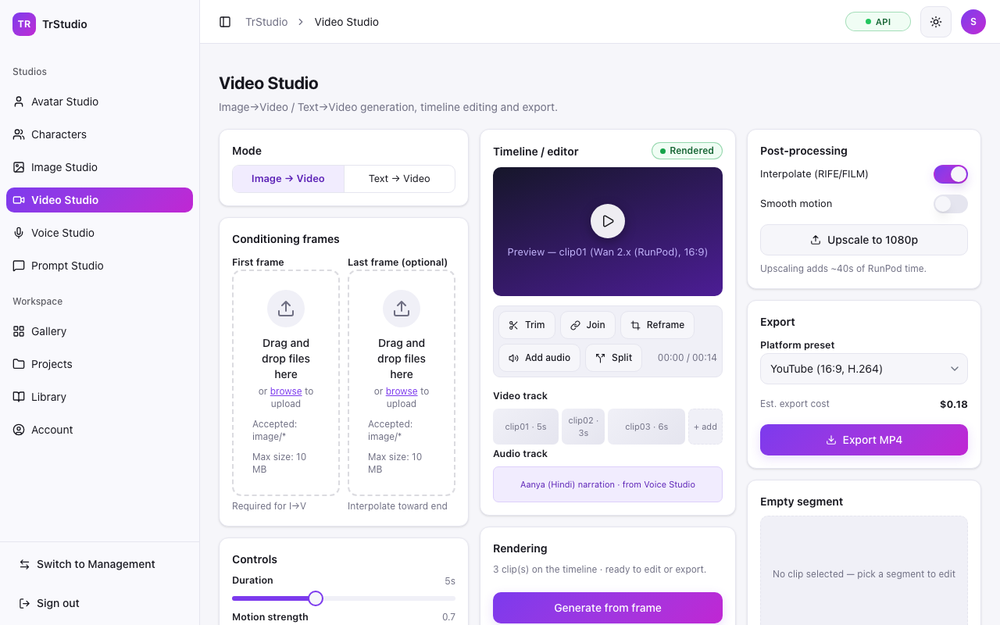
Runtime: renders — 1280 and 390, light and dark, test host, 2026-11-15 (tests/.artifacts/verify/screens.json).
Call chain: VideoStudio.razor:TrySubmitJobAsync → SpineEndpoints.SubmitJobAsync (POST /api/v1/jobs) → JobOrchestrator.SubmitAsync → JobRepository.InsertAsync → "GenerationJob"
| File and line | Function | Watch | Expected value |
|---|---|---|---|
src/TrStudioUI/Pages/Video/VideoStudio.razor:782 | TrySubmitJobAsync | vRequest | picked model (or tier default svd-local/wan-video/heygen-video), TextToVideo or ImageToVideo, ParamsJson with prompt from t2v-prompt, durationSeconds, aspectRatio |
src/TrStudio.InProcess/Routes/SpineEndpoints.cs:67 | SubmitJobAsync | vResponse | JobId; 402 when over the spend cap |
src/TrStudio.Engine/Domain/Jobs/JobOrchestrator.cs:182 | SubmitAsync | vJob.CostEstimate | Venice price or the registry estimate |
src/TrStudio.Engine/Infrastructure/Data/JobRepository.cs:36 | InsertAsync | vSql | one "GenerationJob" row |
src/TrStudioUI/Pages/Video/VideoStudio.razor:811 | TrySubmitJobAsync (poll) | objEta, objVenicePrice | Venice progress, ETA and ActualCost/CostEstimate |
src/TrStudioUI/Pages/Video/VideoStudio.razor:570 | LoadTimelineAsync | vAssets | past video assets (not lip-sync) rebuilt as timeline clips; newest narration found at line 604 |
Controls (data-testid): generate-btn, t2v-prompt, mode-tabs, btn-text-video, btn-image-video, first-frame-upload, last-frame-upload, video-model-picker, field-video-model, field-character, duration-select, duration-slider, resolution-select, motion-slider, tier-group, switch, switch-2, btn-upscale-to-1080p, btn-export-mp4, timeline-toolbar, timeline-preview, timeline-empty, render-progress, venice-progress, alert-sent-to-venice, alert-venice-failed, badge-cloud-venice
Calculations on this screen: DurationSeconds (line 446, the model's stated duration via VideoModelFilter.Seconds, else the slider); timeline total (line 479, sum of clip seconds); FormatCost (line 951); VideoModelFilter.Allowed/KeepOrFirst (allowed values per model).
Prompt studio (/prompt-studio)#
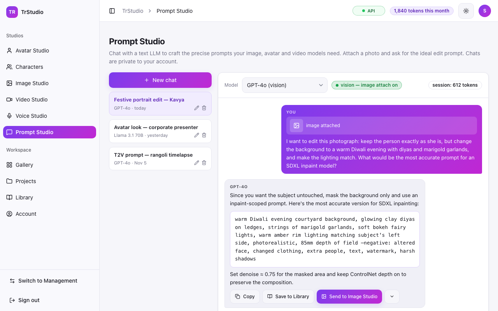
Runtime: renders — 1280 and 390, light and dark, test host, 2026-11-15 (tests/.artifacts/verify/screens.json).
Call chain: PromptStudio.razor:SendMessageAsync → PromptChatEndpoints.PostMessageAsync (POST /api/v1/prompt-chat/sessions/{id}/messages) → PromptChatService.CompleteAsync → LlmTokenTracker.RecordUsageAsync + PromptChatRepository.TouchSessionAsync → "PromptChatSession"."Tokens" (src/TrStudioDb/Scripts/0621_PromptChatTokens.sql:6)
| File and line | Function | Watch | Expected value |
|---|---|---|---|
src/TrStudioUI/Pages/PromptStudio/PromptStudio.razor:825 | SendMessageAsync | vPost | 200 with user and assistant turns; vActive.Tokens set from SessionTokens (line 856) |
src/TrStudio.InProcess/Routes/PromptChatEndpoints.cs:236 | PostMessageAsync | vResult | the completion, not Rejected |
src/TrStudio.InProcess/Routes/PromptChatEndpoints.cs:269 | PostMessageAsync | vTurnTokens | input + output tokens for this turn, 0 or more |
src/TrStudio.Engine/Domain/PromptChat/PromptChatService.cs:152 | CompleteAsync | vInput, vOutput | the provider's usage figures (estimated at length/4 when the model is not set up, line 338) |
src/TrStudio.Engine/Domain/Rag/LlmTokenTracker.cs:41 | RecordUsageAsync | vUsage.InputTokens | this month's total for the user (in memory; spend ledger is written only if cost > 0) |
src/TrStudio.Engine/Infrastructure/Data/PromptChatRepository.cs:157 | TouchSessionAsync | aTokens | UPDATE "PromptChatSession" SET "Tokens" = "Tokens" + @aTokens (SQL at line 61) |
Controls (data-testid): prompt-studio, session-rail, btn-new-chat, btn-action / btn-action-N (delete), field-llmsel, badge-status, badge-{usage}, badge-{session tokens}, chat-thread, typing, prompt-block, card-1, btn-copy{n}, btn-save-to-library{n}, btn-send-to-image-studio{n}, field-describe-what-you-want-t, icon-btn-attach-image, btn-send, api-alert, rename-title, rename-confirm, save-name, save-preset-confirm.
Calculations on this screen: PromptChatEndpoints.PostMessageAsync adds the turn's tokens (input + output) to the running total, so SessionTokens = stored total + this turn. PromptChatService.EstimateUsage (:330) estimates tokens as length/4 and cost as tokens/1000 × the synthetic rate. UsageLabel (PromptStudio.razor:630) formats this month's total from GET /api/v1/rag/usage. SplitReply (:1158) splits a reply into prompt blocks and prose.
Gallery (/gallery)#
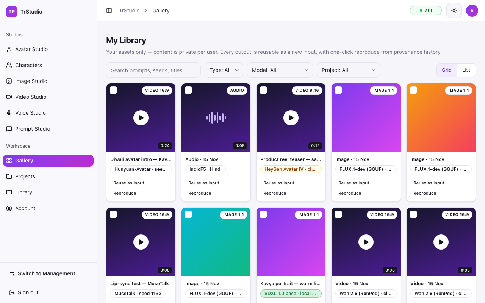
Runtime: renders — 1280 and 390, light and dark, test host, 2026-11-15 (tests/.artifacts/verify/screens.json).
Call chain: Gallery.razor:TryLoadAssetsAsync → WorkspaceEndpoints.ListAssetsAsync (GET /api/v1/assets?aPageSize=100) → no service (the route calls repositories directly) → AssetRepository.ListAsync + GenerationLogRepository.ListByJobsAsync → "GeneratedAsset", "GenerationLog"
| File and line | Function | Watch | Expected value |
|---|---|---|---|
src/TrStudioUI/Pages/Gallery/Gallery.razor:355 | TryLoadAssetsAsync | vPage | the signed-in user's assets, newest first |
src/TrStudio.InProcess/Routes/WorkspaceEndpoints.cs:80 | ListAssetsAsync | vPage | assets filtered to the owner |
src/TrStudio.InProcess/Routes/WorkspaceEndpoints.cs:343 | ToAssetResponse | ParamsJson, ProvenanceSigned | the stored params; true only for a signed C2PA manifest |
src/TrStudio.InProcess/Routes/WorkspaceEndpoints.cs:310 | WithRunInfoAsync | vEntries | the latest log row for each job (provider, cost, failure) |
src/TrStudio.Engine/Infrastructure/Data/AssetRepository.cs:99 | ListAsync | vSql | SELECT … FROM "GeneratedAsset" WHERE "UserId" = @aUserId … ORDER BY "CreatedUtc" DESC |
Controls (data-testid): field-search-prompts-seeds-tit, field-2, field-3, field-4 (NativeSelect filters), btn-grid, btn-list (segmented), btn-clear-all, badge-{chip}, card-{n}, btn-reproduce, btn-reproduce-{n}, btn-export-selected, link-compare, card-asset-details, badge-provider-venice, venice-asset-details, venice-price, btn-go-to-image-studio, api-down-alert.
Calculations on this screen: Matches (Gallery.razor:372) filters by type, model and project, and does a case-insensitive text search. GalleryAsset.Aspect (:587) reduces width:height by their GCD to get the aspect ratio. FromResponse (:509) picks the "where it ran" label from the provider kind. BadgeTestIds (:406) builds the badge test names.
Projects (/projects)#
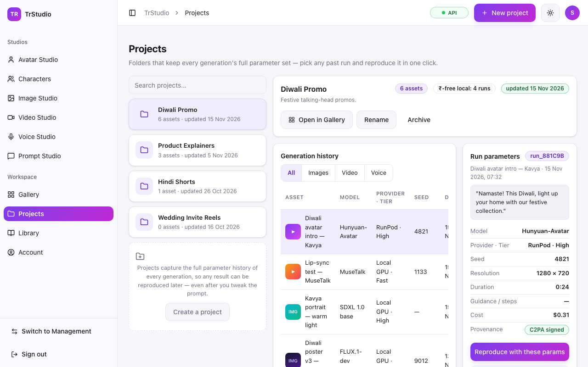
Runtime: renders — 1280 and 390, light and dark, test host, 2026-11-15 (tests/.artifacts/verify/screens.json).
Call chain: Projects.razor:TryLoadProjectsAsync / LoadHistoryAsync → WorkspaceEndpoints.ListProjectsAsync (GET /api/v1/projects) and GetProjectHistoryAsync (GET /api/v1/projects/{id}/history) → no service (repositories called directly) → ProjectRepository.ListAsync / AssetRepository.ListAsync → "Project", "GeneratedAsset"
| File and line | Function | Watch | Expected value |
|---|---|---|---|
src/TrStudioUI/Pages/Projects/Projects.razor:363 | TryLoadProjectsAsync | vProjects | the user's projects, not archived |
src/TrStudioUI/Pages/Projects/Projects.razor:422 | LoadHistoryAsync | vPage | the selected project's runs and their TotalCount |
src/TrStudio.InProcess/Routes/WorkspaceEndpoints.cs:154 | ListProjectsAsync | vProjects | owner-scoped project rows |
src/TrStudio.InProcess/Routes/WorkspaceEndpoints.cs:289 | GetProjectHistoryAsync | vHistory | the project's assets (404 if the project belongs to someone else, line 280) |
src/TrStudio.Engine/Infrastructure/Data/ProjectRepository.cs:81 | ListAsync | ListSql | SELECT … FROM "Project" WHERE "UserId" = @aUserId |
src/TrStudio.Engine/Infrastructure/Data/AssetRepository.cs:99 | ListAsync | vSql | adds AND "ProjectId" = @aProjectId |
Controls (data-testid): btn-new-project, btn-create-a-project, field-search-projects, card-5, card-6, card-9, badge-18-assets, btn-rename, btn-archive, btn-open-in-gallery, btn-{tab} (segmented), card-generation-history, table-1, badge-free-local-9-runs, btn-reproduce / btn-reproduce-{n}, card-run-parameters, badge-run-01jzk4, badge-c2pa-signed, badge-status, btn-copy-params-as-json, btn-reproduce-with-these-params, badge-provider-venice, venice-run-details, venice-price, venice-failure-reason, api-down-alert.
Calculations on this screen: FreeLocalRuns (Projects.razor:294) counts runs where IsFreeLocal is true (local provider, cost null or 0; :596). HistoryHint gives "Showing n of m". AssetCountLabel (:303) uses TotalCount from ?aPageSize=1. VeniceRunDetailsFormat.PriceLabel (VeniceRunDetailsFormat.cs:24) formats the price.
Comparison (/compare)#
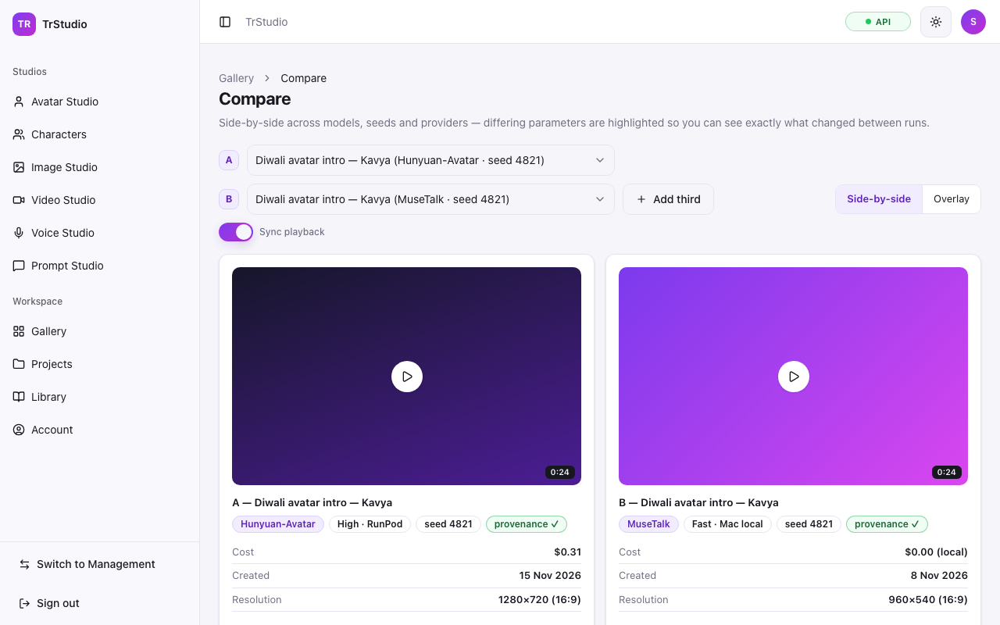
Runtime: renders — 1280 and 390, light and dark, test host, 2026-11-15 (tests/.artifacts/verify/screens.json).
Call chain: Compare.razor:RefreshComparedParamsAsync → Phase9Endpoints.CompareAssetsAsync (GET /api/v1/compare?assetIds=) → AssetRepository.GetAsync once per id ("GeneratedAsset"), then AssetComparer.Compare (no database access)
| File and line | Function | Watch | Expected value |
|---|---|---|---|
src/TrStudioUI/Pages/Compare/Compare.razor:311 | TryLoadCompareAsync | vPage | the user's assets that can fill a slot (GET /api/v1/assets) |
src/TrStudioUI/Pages/Compare/Compare.razor:352 | RefreshComparedParamsAsync | vResponse | one param dictionary per picked asset, keyed into objParamsByAsset |
src/TrStudio.InProcess/Routes/Phase9Endpoints.cs:105 | CompareAssetsAsync | vAsset | each owned asset (ids you don't own are skipped; fewer than 2 gives 400) |
src/TrStudio.InProcess/Routes/Phase9Endpoints.cs:117 | CompareAssetsAsync | AssetComparer.Compare(vInputs) | a CompareResponse |
src/TrStudio.Engine/Domain/Compare/AssetComparer.cs:20 | Compare | aAssets | the parsed ParamsJson for each asset |
src/TrStudio.Engine/Infrastructure/Data/AssetRepository.cs:64 | GetAsync | vSql | SELECT … FROM "GeneratedAsset" WHERE "GeneratedAssetId" = @aAssetId AND "UserId" = @aUserId |
Controls (data-testid): compare-slotbar, field-{n}, btn-add-third, btn-side-by-side, btn-overlay, switch, switch-2, compare-panes, card-{n}, btn-reproduce{n}, btn-export{n}, link-open-in-gallery{n}, compare-diff, card-parameters-{N}-differ, table-1, alert-info, card-nothing-to-compare-yet, link-gallery, link-go-to-gallery, api-down-alert.
Calculations on this screen: BuildDiff (Compare.razor:495) combines the model, provider, resolution, cost and seed rows with every param key from either asset; DiffRow.Of (:669) sets Differs. DiffCount (:232) counts the rows that differ. CompareAsset.AspectOf (:652) uses the GCD for the aspect ratio. Humanize (:520) turns key names into labels.
Library (/library)#
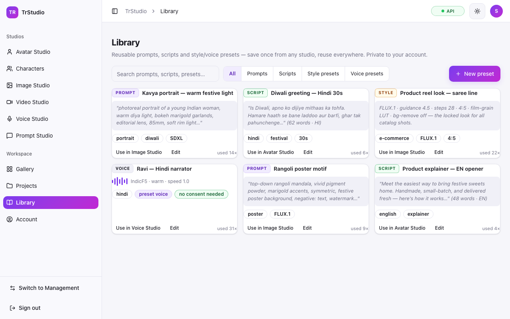
Runtime: renders — 1280 and 390, light and dark, test host, 2026-11-15 (tests/.artifacts/verify/screens.json).
Call chain: Library.razor:TryLoadPresetsAsync → Phase9Endpoints.ListPresetsAsync (GET /api/v1/presets) → no service (repository called directly) → PresetRepository.ListAsync → "Preset"
| File and line | Function | Watch | Expected value |
|---|---|---|---|
src/TrStudioUI/Pages/Library/Library.razor:326 | TryLoadPresetsAsync | vPresets | the user's presets |
src/TrStudioUI/Pages/Library/Library.razor:413 | SavePresetAsync | vResponse | POST (new) or PUT /api/v1/presets/{id} (edit), 2xx |
src/TrStudio.InProcess/Routes/Phase9Endpoints.cs:134 | ListPresetsAsync | vPresets | owner-filtered presets, optional type filter |
src/TrStudio.Engine/Infrastructure/Data/PresetRepository.cs:90 | ListAsync | ListSql | SELECT … FROM "Preset" WHERE "UserId" = @aUserId … (SQL at line 31) |
Controls (data-testid): library-toolbar, field-search-prompts-scripts-p, btn-{tab} (segmented: all/prompts/scripts/styles/voices), btn-new-preset, preset-grid, per-card names from ControlNames, card-no-presets-yet, link-go-to-image-studio, preset-editor, save-preset-btn, api-down-alert.
Calculations on this screen: Matches (Library.razor:353) filters by type tab and does a text search over name, snippet and tags. ToApiType / FromApiType (:448, :457) map style↔style-preset and voice↔voice-preset. ControlNames (:472) cuts test names at 30 characters and adds suffixes to repeats.
Hardware & setup (/admin/setup/hardware)#
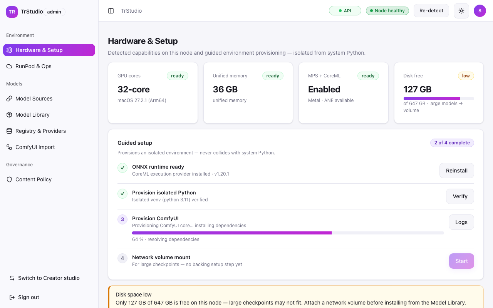
Runtime: renders — 1280 and 390, light and dark, test host, 2026-11-15 (tests/.artifacts/verify/screens.json).
Call chain: AdminHardware.razor:TryLoadSetupAsync → SetupEndpoints.GetSetupStatusAsync (GET /api/v1/admin/setup) → SetupService.GetStatusAsync → SetupStateRepository.ListAsync → "SetupState" (hardware cards: GET /api/v1/admin/capabilities → CapabilityDetector.DetectAsync, a host probe with no table)
| File and line | Function | Watch | Expected value |
|---|---|---|---|
src/TrStudioUI/Pages/Admin/AdminHardware.razor:337 | TryLoadSetupAsync | vResponse / objSteps | 200 with the live setup steps; the volume row stays last |
src/TrStudio.InProcess/InProcessEngineHandler.cs:78 | SendAsync (policy loop) | vResult.Succeeded | true for an admin (AdminOnly, set at SetupEndpoints.cs:44) |
src/TrStudio.InProcess/Routes/SetupEndpoints.cs:87 | GetSetupStatusAsync | vStatus | SetupStatus with Steps filled |
src/TrStudio.Engine/Infrastructure/Setup/SetupService.cs:43 | GetStatusAsync | vSteps | one row per setup step |
src/TrStudio.Engine/Infrastructure/Setup/SetupStateRepository.cs:36 | ListAsync | vRows | rows from "SetupState" |
src/TrStudio.Engine/Infrastructure/Capability/CapabilityDetector.cs:158 | ApplyReadinessVerdict | IsReadyForLocalInference | true only if CPU, RAM and free disk all meet the minimums |
Controls (data-testid): btn-re-detect, card-guided-setup, badge-2-of-4-complete, badge-status, progress, progress-2, alert-warn, api-down-alert, capabilities-unavailable, link-configure-volume, link-model-library, plus per-card/step ids built at runtime (@vCardTestId, @vBadgeTestId, @vButtonId).
Calculations on this screen: ApplyReport (AdminHardware.razor:282) works out disk-used % and the low-disk flag (free < 25% of total); objCompletedSteps (:196) counts the steps marked done; CapabilityDetector.ApplyReadinessVerdict (:146) sets the local-inference verdict.
Model sources (/admin/sources)#
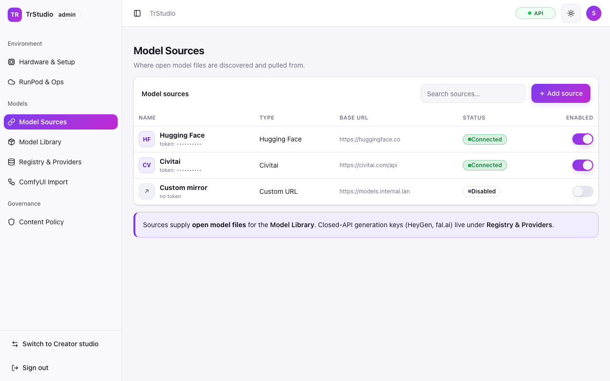
Runtime: renders — 1280 and 390, light and dark, test host, 2026-11-15 (tests/.artifacts/verify/screens.json).
Call chain: AdminSources.razor:LoadSourcesAsync → SetupEndpoints.ListSourcesAsync (GET /api/v1/admin/sources) → ModelSourceRepository.ListAsync → "ModelSource" (save: Phase3Endpoints.CreateSourceAsync / UpdateSourceAsync → ModelSourceRepository.UpsertAsync)
| File and line | Function | Watch | Expected value |
|---|---|---|---|
src/TrStudioUI/Pages/Admin/AdminSources.razor:354 | LoadSourcesAsync | objRows | the configured sources, mapped to rows |
src/TrStudio.InProcess/InProcessEngineHandler.cs:78 | SendAsync (policy loop) | vResult.Succeeded | true for an admin (AdminOnly at SetupEndpoints.cs:60, Phase3Endpoints.cs:38) |
src/TrStudio.InProcess/Routes/SetupEndpoints.cs:261 | ListSourcesAsync | vSources | the list (no service layer, the route calls the repo directly) |
src/TrStudio.Engine/Infrastructure/ModelSources/ModelSourceRepository.cs:52 | ListAsync | vRows | "ModelSource" rows ordered by CreatedUtc; tokens never returned |
src/TrStudioUI/Pages/Admin/AdminSources.razor:416 | SaveSourceAsync | vResponse | POST when new, PUT /{id} when editing; 2xx |
src/TrStudio.InProcess/Routes/Phase3Endpoints.cs:102 | CreateSourceAsync | vSource | upserted (INSERT ... ON CONFLICT at ModelSourceRepository.cs:61), returned with 201 |
Controls (data-testid): btn-add-source, field-search-sources, card-model-sources, table-1, card-add-edit-source, badge-new, field-name, field-type, field-base-url, field-api-token, switch-4, btn-test-connection, test-ok, test-fail, btn-save, btn-cancel, alert-info, link-model-library, link-registry-providers, plus per-row ids built at runtime.
Calculations on this screen: none.
Model library (/admin/models)#
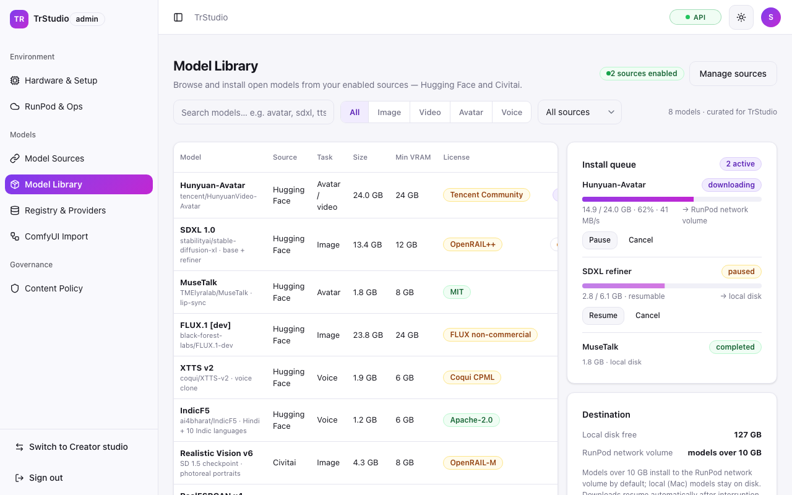
Runtime: renders — 1280 and 390, light and dark, test host, 2026-11-15 (tests/.artifacts/verify/screens.json).
Call chain: AdminModels.razor:InstallAsync → SetupEndpoints.StartInstallAsync (POST /api/v1/admin/installs) → ModelInstallService.StartInstallAsync → ModelInstallRepository.InsertAsync → "ModelInstall" (the queue reloads through LoadQueueAsync → GET /api/v1/admin/installs → ModelInstallService.ListAsync)
| File and line | Function | Watch | Expected value |
|---|---|---|---|
src/TrStudioUI/Pages/Admin/AdminModels.razor:517 | InstallAsync | vRequest | ModelName + SourceId of an enabled source; 2xx, then the queue reloads |
src/TrStudio.InProcess/InProcessEngineHandler.cs:78 | SendAsync (policy loop) | vResult.Succeeded | true for an admin (AdminOnly at SetupEndpoints.cs:52) |
src/TrStudio.InProcess/Routes/SetupEndpoints.cs:180 | StartInstallAsync | vItem | new install item; 400 if no model name, 404 if the source is unknown |
src/TrStudio.Engine/Infrastructure/Install/ModelInstallService.cs:85 | StartInstallAsync | vItem | queued install handed to the repo |
src/TrStudio.Engine/Infrastructure/Install/ModelInstallRepository.cs:36 | InsertAsync | SQL | INSERT INTO "ModelInstall" |
src/TrStudioUI/Pages/Admin/AdminModels.razor:419 | LoadQueueAsync | objQueue | cancelled items hidden; active first, then newest |
Controls (data-testid): btn-all, btn-image, btn-video, btn-voice, btn-avatar (segmented task filter), field-search-models-e-g-avatar, field-2, table-1, btn-prev, btn-next, card-install-queue, badge-2-active, card-destination, card-1, badge-amber, badge-status, alert-info, alert-warn, no-sources-empty, link-hardware-setup, link-manage-sources, link-registry-providers, plus row/action/state/license ids built at runtime.
Calculations on this screen: FilteredCatalog (AdminModels.razor:305) filters the hand-picked catalog by enabled source, search text, task and source; TotalPages (:317) is the page count; the destination rule (:493) sends models over NetworkVolumeThresholdGb (10 GB, :298) to the RunPod volume.
Registry & providers (/admin/registry)#
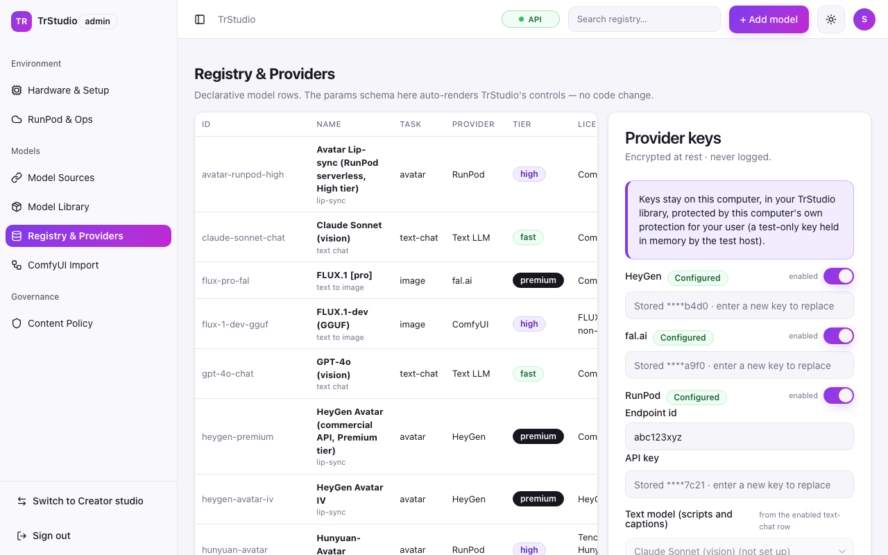
Runtime: renders — 1280 and 390, light and dark, test host, 2026-11-15 (tests/.artifacts/verify/screens.json).
Call chain: AdminRegistry.razor:TryLoadRegistryAsync → RegistryEndpoints.ListRegistryAsync (GET /api/v1/admin/registry) → RegistryRepository.ListAsync → "RegistryModel"; keys: RegistryEndpoints.ListProviderKeysAsync (GET /api/v1/admin/providers/keys) → AesGcmKeyStore.ListMaskedAsync → ProviderKeyRepository.ListAsync → "ProviderKey"
| File and line | Function | Watch | Expected value |
|---|---|---|---|
src/TrStudioUI/Pages/Admin/AdminRegistry.razor:539 | TryLoadRegistryAsync | objRows / objModelsById | every registry model (enabled and disabled) |
src/TrStudio.InProcess/InProcessEngineHandler.cs:78 | SendAsync (policy loop) | vResult.Succeeded | true for an admin (AdminOnly at RegistryEndpoints.cs:45 and :58) |
src/TrStudio.InProcess/Routes/RegistryEndpoints.cs:88 | ListRegistryAsync | vModels | ListAsync(false, ...), so disabled rows are included |
src/TrStudio.Engine/Infrastructure/Data/RegistryRepository.cs:83 | ListAsync | vSql | SELECT ... FROM "RegistryModel" |
src/TrStudio.InProcess/Routes/RegistryEndpoints.cs:149 | ListProviderKeysAsync | vKeys | masked keys, never plaintext (AesGcmKeyStore.cs:68) |
src/TrStudio.InProcess/Routes/RegistryEndpoints.cs:114 | UpsertRegistryModelAsync | aRequest.Model | saved by SaveModelAsync (AdminRegistry.razor:889); route id must match body id |
Controls (data-testid): field-search-registry, btn-add-model, table-1, btn-row, card-edit-model, field-display-name, field-task, field-tier, field-provider, field-provider-model-id, btn-fill-from-venice, venice-model-fields, venice-fill-error, model-abilities, field-takes-reference-picture, field-keeps-fixed-character, param-values, field-error, btn-save, btn-cancel, card-provider-keys, key-protection-note, field-runpod-endpoint, provider-text-model, field-text-model, textchat-endpoint, textchat-key, textchat-model, textchat-vision, provider-venice, badge-cloud-venice, switch-venice, field-venice-address, field-venice-key, btn-test-connection, badge-connected, venice-error, alert-info, card-1, plus tier/safety/provider/switch ids built at runtime.
Calculations on this screen: none.
RunPod & ops (/admin/ops)#
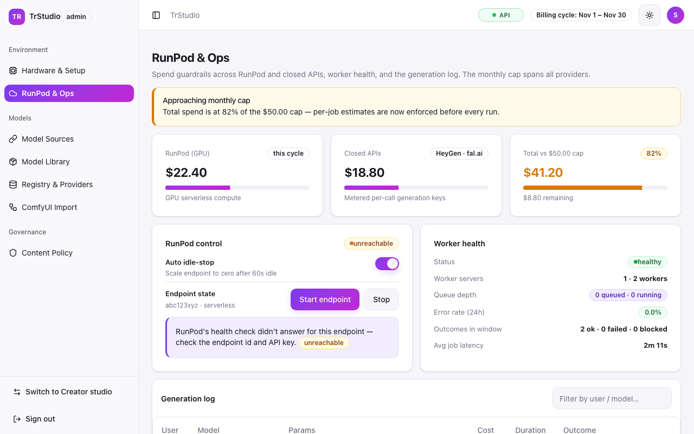
Runtime: renders — 1280 and 390, light and dark, test host, 2026-11-15 (tests/.artifacts/verify/screens.json).
Call chain: AdminOps.razor:LoadAsync → Phase9Endpoints.GetOpsDashboardAsync (GET /api/v1/admin/ops) → OpsDashboardService.GetDashboardAsync → GenerationLogRepository.GetOutcomeCountsSinceAsync → "GenerationLog" (plus SpendLedger.GetSummaryAsync → "SpendRecord")
| File and line | Function | Watch | Expected value |
|---|---|---|---|
src/TrStudioUI/Pages/Admin/AdminOps.razor:352 | LoadAsync | objOps / objSpend | live dashboard; a failure sets objApiDown |
src/TrStudio.InProcess/InProcessEngineHandler.cs:78 | SendAsync (policy loop) | vResult.Succeeded | true for an admin (AdminOnly at Phase9Endpoints.cs:40) |
src/TrStudio.InProcess/Routes/Phase9Endpoints.cs:78 | GetOpsDashboardAsync | result | OpsDashboardResponse |
src/TrStudio.Engine/Domain/Ops/OpsDashboardService.cs:46 | GetDashboardAsync | vOutcomes, vSpend, vHealthy | outcome counts for the rolling window; healthy if a heartbeat is recent |
src/TrStudio.Engine/Infrastructure/Data/GenerationLogRepository.cs:124 | GetOutcomeCountsSinceAsync | SQL | COUNT(*) ... FROM "GenerationLog" ... GROUP BY "Outcome" |
src/TrStudio.Engine/Domain/Cost/SpendLedger.cs:64 | GetSummaryAsync | vByChannel | month-to-date totals by channel |
Controls (data-testid): card-runpod-control, btn-start-endpoint, btn-stop, switch, runpod-unconfigured, badge-starting, card-worker-health, card-generation-log, field-filter-by-user-model, table-1, card-1, card-2, card-3, progress, progress-2, progress-3, badge-status, badge-status-2, badge-0-8, badge-2-jobs, badge-88, badge-billing-cycle-jun-1-jun, badge-heygen-fal-ai, badge-this-cycle, alert-info, alert-warn, api-down-alert, plus per-row @objRow.OutcomeTestId / @objRow.ReproduceTestId.
Calculations on this screen: OpsDashboardService.BuildErrorRate (:81) gives the error rate as (failed + blocked) / total over the window; GetDashboardAsync adds up the enqueued and processing counts (:66-67); AdminOps.MapSpend (AdminOps.razor:420) splits spend into RunPod and closed-API channel totals against the monthly cap.
ComfyUI import & debug (/admin/comfy/import)#
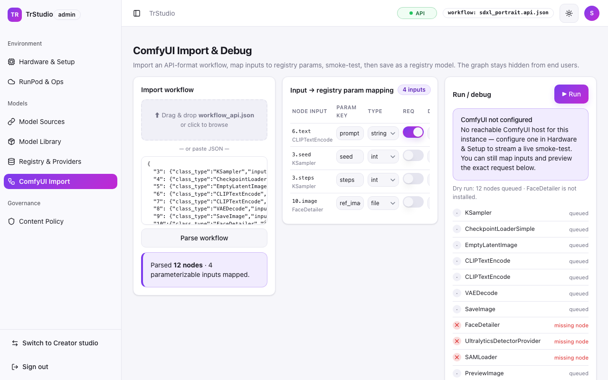
Runtime: renders — 1280 and 390, light and dark, test host, 2026-11-15 (tests/.artifacts/verify/screens.json).
Call chain: AdminComfy.razor:SaveAsModelAsync → ComfyEndpoints.SaveAsModelAsync (POST /api/v1/admin/comfy/save-as-model, body ComfySaveAsModelRequest) → ComfyPipelineService.SaveAsModelAsync → ComfyWorkflowRepository.InsertWorkflowAsync / InsertVersionAsync + RegistryRepository.UpsertAsync → "ComfyWorkflow", "ComfyWorkflowVersion", "RegistryModel"
| File and line | Function | Watch | Expected value |
|---|---|---|---|
src/TrStudioUI/Pages/Admin/AdminComfy.razor:772 | SaveAsModelAsync | vRequest | ModelId slug (:753), name, workflow JSON, mappings; a non-2xx shows the error body |
src/TrStudio.InProcess/InProcessEngineHandler.cs:78 | SendAsync (policy loop) | vResult.Succeeded | true for an admin (AdminOnly at ComfyEndpoints.cs:36) |
src/TrStudio.InProcess/Routes/ComfyEndpoints.cs:126 | SaveAsModelAsync | vModel | registered model; 401 if there is no user, 400 COMFY_SAVE_ERROR on an ArgumentException |
src/TrStudio.Engine/Domain/Comfy/ComfyPipelineService.cs:133 | SaveAsModelAsync | vWorkflow, vVersion | workflow inserted, then version (:145) |
src/TrStudio.Engine/Domain/Comfy/ComfyPipelineService.cs:164 | SaveAsModelAsync | vModel | registry row upserted |
src/TrStudio.Engine/Infrastructure/Data/ComfyWorkflowRepository.cs:36 | InsertWorkflowAsync | SQL | INSERT INTO "ComfyWorkflow" (version at :77) |
Controls (data-testid): card-import-workflow, btn-parse-workflow, card-input-registry-param-mapping, table-1, badge-4-inputs, card-run-debug, btn-run, progress, card-exact-json-sent, btn-install-node, card-save-version, field-model-name-e-g-sdxl-port, btn-save-as-model, badge-known-good, badge-workflow-sdxl-portrait-a, field-1, field-15, field-error, alert-info, alert-warn, plus mapping-row ids built at runtime.
Calculations on this screen: ApplyDebug (AdminComfy.razor:642) gives run progress as the share of nodes in state ok; ApplyLocalProgression (:679) gives progress up to the first missing dependency; CanSave (:296) needs a known-good run, no missing dependency and a model name.
Content policy (/admin/policy)#
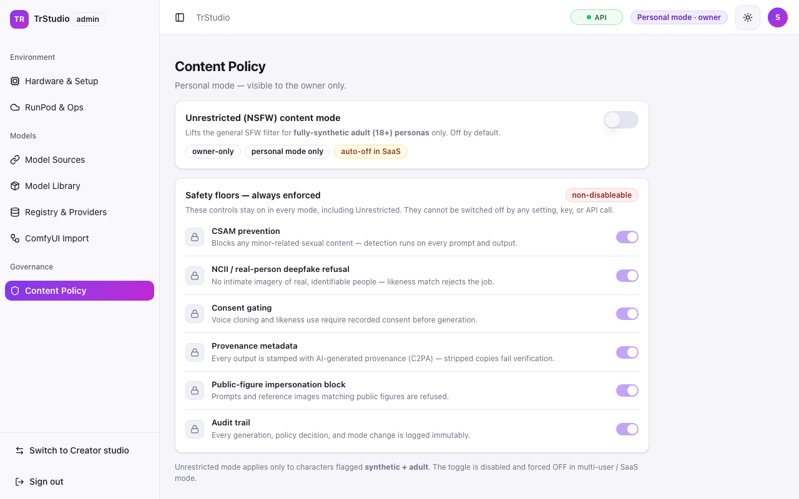
Runtime: renders — 1280 and 390, light and dark, test host, 2026-11-15 (tests/.artifacts/verify/screens.json).
Call chain: AdminPolicy.razor:TryLoadPolicyAsync → SafetyEndpoints.GetNsfwPolicyAsync (GET /api/v1/admin/policy/nsfw) → SafetyPolicyService.GetNsfwPolicyAsync → SafetyPolicyRepository.GetAsync → "SafetyPolicy" (save: PersistAsync → PUT → SetNsfwEnabledAsync → UpsertAsync)
| File and line | Function | Watch | Expected value |
|---|---|---|---|
src/TrStudioUI/Pages/Admin/AdminPolicy.razor:201 | TryLoadPolicyAsync | objNsfwEnabled (:227) | the effective NSFW flag; off by default |
src/TrStudio.InProcess/InProcessEngineHandler.cs:78 | SendAsync (policy loop) | vResult.Succeeded | true for an admin (AdminOnly at SafetyEndpoints.cs:45) |
src/TrStudio.InProcess/Routes/SafetyEndpoints.cs:100 | GetNsfwPolicyAsync | result | NsfwPolicyResponse |
src/TrStudio.Engine/Domain/Safety/SafetyPolicyService.cs:40 | GetNsfwPolicyAsync | vStored | stored flag, false if there is no row |
src/TrStudio.Engine/Infrastructure/Data/SafetyPolicyRepository.cs:30 | GetAsync | SQL | FROM "SafetyPolicy" WHERE "PolicyKey" = 'default' |
src/TrStudio.InProcess/Routes/SafetyEndpoints.cs:108 | SetNsfwPolicyAsync | vResponse | 409 when an enable is refused in multi-user mode, else 200 |
Controls (data-testid): nsfw-switch, nsfw-confirm, nsfw-confirm-action, multiuser-note, card-1, card-safety-floors-always-enforced, badge-auto-off-in-saas, badge-non-disableable, badge-owner-only, badge-personal-mode-only, badge-personal-mode-owner, plus per-floor @vLockTestId.
Calculations on this screen: SafetyPolicyService.BuildResponse (:71) sets effective NSFW = stored AND personal mode; SetNsfwEnabledAsync (:49) forces it off and saves false in multi-user mode.
Cross-cutting flows#
Sign-in#
Call chain: see the Sign in (/login) entry above; the session is stored through IAuthSession (desktop MauiAuthSession; the test host keeps the July web auth pieces) before navigation.
Configuration, logging, errors#
- Configuration: the named HttpClient
TrStudioApiroutes every page call in process (src/TrStudio/MauiProgram.cs:67; test hosttests/TrStudio.TestHost/Program.cs:69-70); handler base addresshttp://trstudio.local/(src/TrStudio.InProcess/InProcessEngineHandler.cs:22). - Logging: Serilog (
src/TrStudio/MauiProgram.cs:50, file loggingMauiProgram.cs:105-112). - Errors: pages catch the HTTP failure and show an inline
Alert; see each entry's page handler row.
How to fix a bug with this guide#
- Reproduce; note the screen and control (its
data-testid). - Find the screen below or in its role file; set breakpoints at the rows of its where-to-break table.
- Walk the chain top-down: Razor → in-process route → engine service → repository → SQL. The bug is in one of those hops.
- If a value is calculated, the entry names the calculator method.
- After fixing, re-run the screen's walkthrough in
docs/TrStudio-UsageGuide.md, then re-run*devguide TrStudio --update.
Known issues#
The DevGuide's static map + runtime OBSERVE caught a cluster of FE↔API wiring defects — client calls a route the API doesn't expose, or a save handler that's toast-only, swallowed by try/catch so the screen still demos on seed data (which is why they passed visual verification). ✅ ALL 9 FIXED + RE-VERIFIED LIVE 2026-07-04 (*fix-issues) — each row is back to Verified; the table below is the record of what was caught and closed:
| # | REQ | Defect (file:line) |
|---|---|---|
| 1 | UI-071 | SaveModelAsync/SaveKeysAsync toast-only — zero persistence (AdminRegistry.razor:346-362) |
| 2 | UI-072 | ComfyUI FE routes /status,/run,/install ≠ BE /debug,/dependencies,/smoke,/go-live (AdminComfy.razor:296-298) |
| 3 | UI-070 | Guided-setup stepper RunStepAsync toast-only — doesn't call POST /admin/setup/steps/{key}/run |
| 4 | UI-010 | Avatar voice-preview → /api/v1/voice root (misses /synthesize); script-assist → non-existent /rag/script-assist |
| 5 | UI-040 | Video timeline Edit → /api/v1/avatar/edit instead of /api/v1/video/edit (VideoStudio.razor:535) |
| 6 | UI-030 | Voice VoiceApiRoute="/api/v1/voice" → /presets & root-POST miss /preset-voices & /synthesize |
| 7 | UI-053 | Library preset-type style/voice ≠ API style-preset/voice-preset → 400 (remark) |
| 8 | UI-011 | Character-bible Sheet renders static copy — never calls GET /characters/{id}/bible (remark) |
| 9 | UI-073 | Runtime (OBSERVE): /admin/ops doesn't reflow at 390px — 823px horizontal overflow, text clipped (⚠ visual:) |
9 defects caught (8 static FE↔API wiring + 1 runtime visual), all FIXED + re-verified live 2026-07-04 — each fixed call now lands on the API request log (200/201; registry edit persists on reload; comfy /status probe removed; admin-ops scrollWidth==390). Only residual: /video/edit returns a clean 404 until a real source clip exists (placeholder-timeline limitation — the route is now correct). Core flows (job spine, tier routing, safety floors, per-user isolation, image ops, provenance, consent gate) were never affected. All nine REQ-UI-* rows are Verified in docs/TrStudio-Checklist.md. (The file:line references in this table are the July lines at the time of the fix.)
Found while refreshing on 2026-11-15 (documented here only; not yet logged to the checklist):
- Avatar studio does not reopen the newest run on load:
OnAfterRenderAsyncloads characters, voices, projects and spend only (see its entry's{unresolved}row). SpineEndpoints.GetJobResultAsync(src/TrStudio.InProcess/Routes/SpineEndpoints.cs) buildsAssetResponsewithoutParamsJson, so/jobs/{id}/resultreturns it empty; the assets list route (WorkspaceEndpoints.ToAssetResponse) sets it, and the reopen-on-load code uses that route.- Video studio's reopen is partial: it rebuilds the timeline and the newest narration (
VideoStudio.razor:570,:604) but does not restore the last run's settings as Image and Voice do.
Generated by *devguide TrStudio · reflects code as built · realigned 2026-07-05 for the one-app role-based consolidation (BRD-86 / ADR-012) + MAUI desktop head · 22 screen entries refreshed 2026-11-15 (--update). Regenerate after code changes.